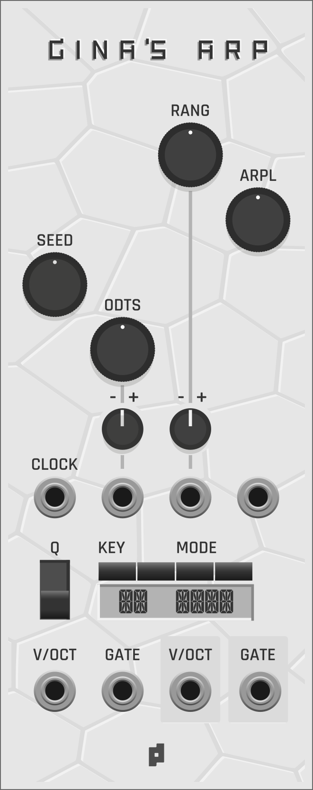
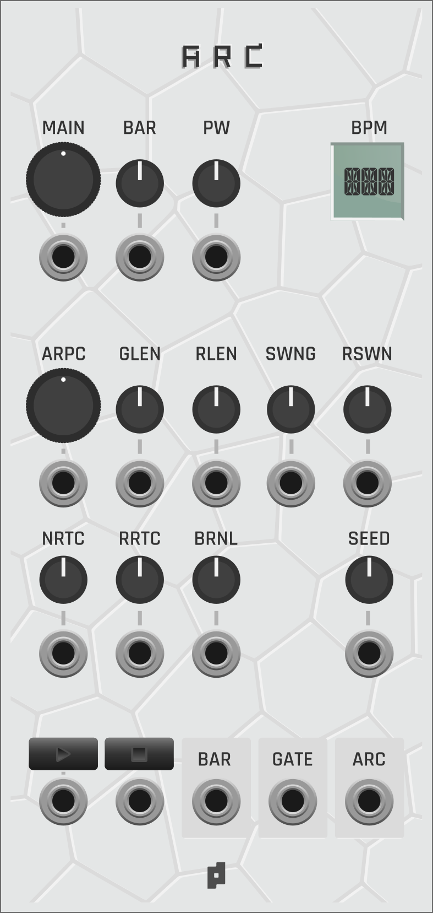
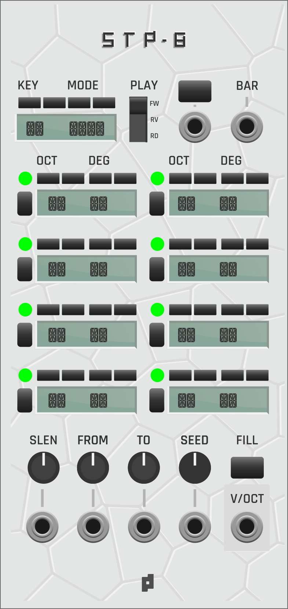
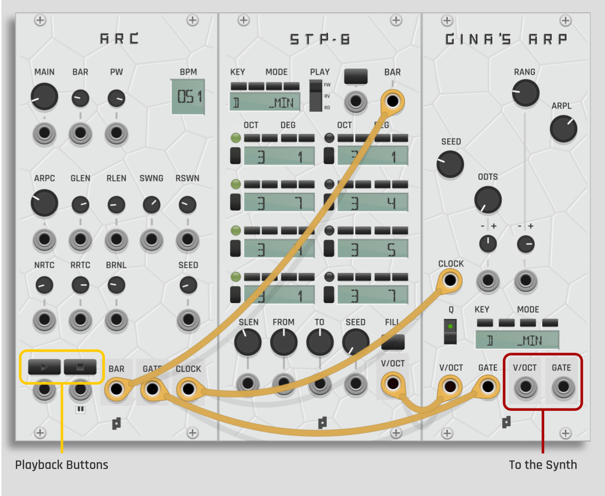
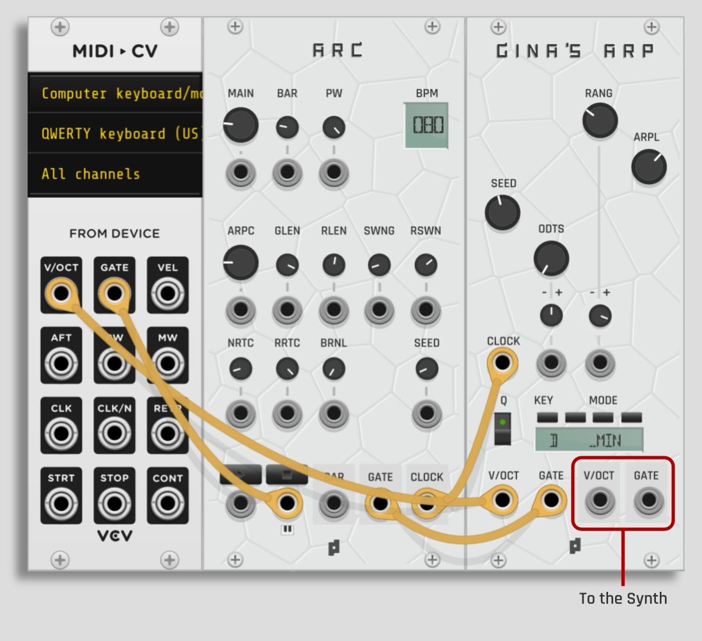

VCV Rack plugin centered around Gina's ARP. It combines register-based arpeggiation, CV control, clocking and cadence sequencing.
Gina's ARP

Gina's ARP receives a pivot note and generates melodic output from key, mode, range, oddities, seed behavior, and arpeggio length. The engine favors stable notes in low registers and opens the melodic vocabulary as the register rises.
- V/OCT In: pivot note input.
- Clock In: advances the arpeggio.
- Gate In: enables phrase output while high.
- Range: controls registral opening.
- ODTS: controls oddity amount.
- Seed: 0 produces mutable behavior; fixed values produce repeatable behavior.
- ARP LEN: controls return length and phrase cycle.
ARC

ARC provides timing and gate behavior for arpeggiated sequencing. It controls clock timing, gate length, ratchet behavior, and emits a BAR pulse once per bar/cycle.
STP-8

STP-8 generates pivot movement for Gina's ARP. It uses eight steps, key/mode selection, degree and octave controls, sequence length, seed behavior, playback direction, and random generation based on tonality.
Quick start
Protoseq for VCV Rack can be patched from a sequencer module or from a keyboard/MIDI-CV module. ARC provides the clock and gate behavior. Gina's ARP receives the pivot note and generates the melodic output.
Basic patch with STP-8

- ARC BAR Out → STP-8 BAR In
- ARC GATE Out → Gina's ARP GATE In
- ARC CLOCK Out → Gina's ARP CLOCK In
- STP-8 V/OCT Out → Gina's ARP V/OCT In
- Gina's ARP V/OCT Out and GATE Out → synth voice
In this patch, STP-8 generates the pivot movement and Gina's ARP turns each pivot into an arpeggiated phrase. ARC keeps the phrase moving and sends the bar/cycle pulse back to STP-8.
Keyboard / MIDI-CV patch

- MIDI-CV V/OCT Out → Gina's ARP V/OCT In
- MIDI-CV GATE Out → ARC Play Gate 🎹 Input
- ARC GATE Out → Gina's ARP GATE In
- ARC CLOCK Out → Gina's ARP CLOCK In
- Gina's ARP V/OCT Out and GATE Out → synth voice
The MIDI gate controls ARC's Play Gate 🎹 input. ARC runs its clock and sends clock/gate output only while this gate is high, so the phrase starts when a key is pressed and stops and resets when the key is released.
Changes of a single decimal in the seed generate completely different phrases and melodies.